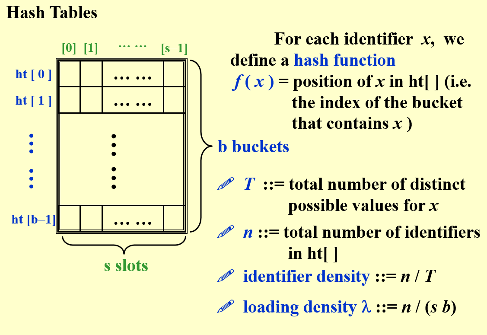

排序
Sort 排序
inplace
stable
Shell
T
F
Insertion
T
T
Heap
T
F
Merge
F
T
Radix
T
冒泡
T
对于一个序列，如果存在两个相等的元素
排序后它们的相对位置不变，则称这个排序算法是稳定的
排序后它们的相对位置发生了变化，则称这个排序算法是不稳定的
稳定排序：冒泡、归并、插入、基数
不稳定排序：快排、希尔、堆排、选择
各个基于比较的算法的最好时间复杂度
仅基于比较的算法能得到的 最好的 “最好时间复杂度”是O(N)， 最好的 “最坏时间复杂度”是O(NlogN)
ShellSort 希尔排序
void Shellsort ( ElementType A [ ], int N ){
int i , j , Increment ;
int Tmp ;
for ( Increment = N / 2 ; Increment > 0 ; Increment /= 2 )
for ( i = Increment ; i < N ; i ++ ) {
/* insertion sort */
Tmp = A [ i ];
for ( j = i ; j >= Increment ; j - = Increment )
if ( Tmp < A [ j - Increment ] )
A [ j ] = A [ j - Increment ];
else
break ;
A [ j ] = Tmp ;
} /* end for-I and for-Increment loops */
}
Note
采取不同的 increment sequence ，希尔排序的时间复杂度的是不一样的，常见的有 \(O(n^{3/2}), O(n^ {5/ 4}),O(n ^ {1.3})\) 等
HeapSort 堆排序
Algorithm 1 {
BuildHeap ( H ); //建堆时间复杂度为O(N)
for ( int i = 0 ; i < N ; i ++ )
TmpH [ i ] = DeleteMin ( H ); //DeleteMin时间复杂度为O(logN)
for ( int i = 0 ; i < N ; i ++ )
H [ i ] = TmpH [ i ];
} //总时间复杂度为O(NlogN)
此算法采取一个新的数组来存储DeleteMin操作得到的值，因此极大程度浪费了空间
void HeapSort {
int i ;
for ( i = N / 2 ; i >= 0 ; i -- ){
//注意HeapSort里面一般堆顶元素index为0
PercDown ( A , i , N );
} for ( i = N -1 ; i > 0 ; i -- ){
//left=index*2+1,right=index*2+2,parent=(index-1)/2
Swap ( & A [ 0 ], & A [ i ]);
PercDown ( A , 0 , i );
}
}
补充两个需要用到的函数：
void PercDown ( int * list , int index , int N ){
int i , flag = 0 ;
int value = list [ index ];
while ( index * 2 + 1 < N ){
i = index * 2 + 1 ;
//这里的是把小的往下Percolating Down
if ( i + 1 < N && list [ i ] < list [ i + 1 ]){
++ i ;
} if ( value < list [ i ]){
flag = 1 ;
list [ index ] = list [ i ];
} else {
break ;
}
index = i ;
} if ( flag == 1 )
list [ index ] = value ;
}
void Swap ( int * a , int * b ){
//用指针形式可以直接用函数交换两个数，好耶
int temp ;
temp =* a ;
* a =* b ;
* b = temp ;
}
MergeSort 归并排序
void merge_sort ( int arr [], int start , int end ){
if ( start >= end ){
return ;
} int mid = ( start + end ) / 2 ;
merge_sort ( arr , start , mid );
merge_sort ( arr , mid + 1 , end );
merge ( arr , start , mid , end );
}
void merge ( int arr [], int start , int mid , int end ){
int result [ end - start + 1 ], k = 0 , i = start , j = mid + 1 ;
while ( i <= mid && j <= end ){
if ( arr [ i ] <= arr [ j ]){
result [ k ++ ] = arr [ i ++ ];
} else {
result [ k ++ ] = arr [ j ++ ];
}
} if ( j <= end ){
while ( j <= end ){
result [ k ++ ] = arr [ j ++ ];
}
} if ( i <= mid ){
while ( i <= mid ){
result [ k ++ ] = arr [ i ++ ];
}
} for ( j = 0 , i = start ; j < k ; i ++ , j ++ ){
arr [ i ] = result [ j ];
}
}
QuickSort 快速排序
实践中一般最快的代码
选择一个基准元素（pivot），将数组分成两个子数组，左边的元素都小于等于基准元素，右边的元素都大于等于基准元素，然后对两个子数组进行快排、合并
void QuickSort ( int A [], int Left , int Right ){
int i , j ;
if ( Right - Left >= Cutoff ){
//差值较大时选择快速排序
int Pivot = Median3 ( A , Left , Right );
/*找到Median后，只需要对left+1到Right-2的数进行检查就可以了，
*Right-1是Pivot，而Left和Right都已经在Median3函数中排好大小位置了。
*/
i = Left ;
j = Right -1 ;
for (;;){
//比Pivot大的往后移，小的往前移
while ( A [ ++ i ] < Pivot ){}
while ( A [ -- j ] > Pivot ){}
if ( i < j )
Swap ( & A [ i ], & A [ j ]);
else
break ;
}
Swap ( & A [ i ], & A [ Right -1 ]);
QuickSort ( A , Left , i -1 );
QuickSort ( A , i + 1 , Right );
} else
//数据量较小的时候，使用插入排序反而更快
InsertionSort ( A + Left , Right - Left + 1 );
}
int Median3 ( int A [], int Left , int Right ){
int Center = ( Left + Right ) / 2 ;
if ( A [ Left ] > A [ Center ])
Swap ( & A [ Left ], & A [ Center ]);
if ( A [ Left ] > A [ Right ])
Swap ( & A [ Left ], & A [ Right ]);
if ( A [ Center ] > A [ Right ])
Swap ( & A [ Center ], & A [ Right ]);
//固定有A[Left]<A[Center]<A[Right]，最后将pivot(即Center)转移至Right-1的位置暂存
Swap ( & A [ Center ], & A [ Right -1 ]);
return A [ Right -1 ];
}
Info
在最坏情况下，QuickSort的时间复杂度也是\(O(N^2)\) ，但是平均情况下为 \(O(NlogN)\)
Bucket Sort 桶排序
分治思想
设定k个桶，按照对应属性读取待排序的数组的元素并放入桶中，最后按照顺序输出桶
基数排序
Hash 哈希表
最基础的哈希表
常考的是loading density \(\lambda=n/(sb)\)

哈希函数要求 easy to compute 以及 minimizes the number of collision
对于两个不同的元素，哈希函数可能会给他们分配同一个值，这就会造成 collision ；而当对应的这个bucket已经被塞满时，会发生 overflow
哈希函数应该 unbiased ，这种哈希函数也被称为 uniform hash function
如：if x is a integer , f(x) can be x%TableSize
当x大部分都以0结尾，TableSize取10会造成非常多collision
因此，对于整数keys，我们通常选择 Prime Number 作为TableSize，这对随机数相对友好
解决Collision
分离链接
除了上述顺序存储线性表的方式表示哈希表以外，还可以采用 Separate Chaining (链表)的形式，使得overflow不再发生。
开放寻址
另一种避免overflow的方式是 Open Addressing (开放寻址) 。若是当前位置已满，它会遵循一种自定义的规则寻找表中下一个空位并塞入，常见的有 Linear Probing ，这种方式可以确保所有空位都被使用，但是往往有着较高的运算时间。
另一种搜寻方式叫做 Quadratic Probing (二次探测) 。
\(f(i)=i^2\) /*一个Simple Quadratic Probing Function*/Theorem ：如果Table Size是质数，且Table至少有一半空位，则使用二次探测一定能找到空位。如果Table Size为形式为4k+3的质数，则采用 \(f(i)=(-1)^ii^2\) 可以遍历整个Table
双重哈希 (Double Hasing) ，如果第一个哈希函数探测到的位置已经被占用，则使用第二个哈希函数得到一个间隔值，与第一个函数结果相加
再哈希法
Rehashing 通常取TableSize为最接近原大小的两倍值的Prime，再通过新的hash函数将原有元素重新填入，时间复杂度为 \(O(N)\)